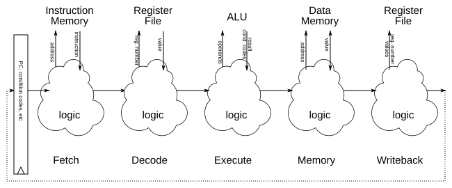
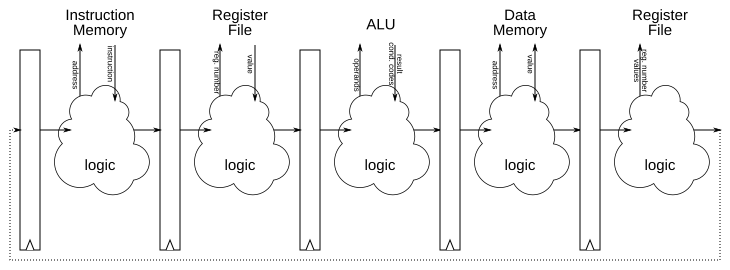

Changelog:
- 10 Apr 2023: add section on OOO pipelines, and handling misspeculation
- 21 Apr 2025: correct register renaming example where wrong tag was updated
This writeup is not designed to stand alone and is unlikely to make sense without the associated lectures.
1 Organizing a processor
A processor has a lot of parts and pieces. It can help keep them orderly if we break them into named components, similar to naming functions in C. There are various names used, but one common model is to consider five steps:
- Fetch, reads an instruction from memory
- Decode, retrieves values from registers
- Execute, uses the ALU
- Memory, reads from or writes to one address of memory
- Writeback, puts results into register

For example, the instruction pushq %r8 would
- Fetch that instruction from memory
- Detect that it is a
pushand read the values of%r8and%rspfrom the register file - Compute the new value of
%rspby sending%rsp’s value and$-8into the ALU - Send the value of
%r8to memory to be written at the address%rsp - $8 - Send the new
%rspback to the register file
This organization does not change what transistors and wires we actually put on the chip, but it does help us think about what purpose they each serve.
2 Pipelining
Real processors pipeline instructions: that is, they split up the work of a single instruction into several components and divide them up into multiple steps. And not just as an organizational aid; they add register banks between the steps.

These between-stages registers are called pipeline registers
;
they handle moving instructions one stage at a time. Because registers
require a clock signal to change values, this means that a single
instruction moves from stage to stage across several clock cycles.
Consider the following code
evaluate:
xorl %eax, %eax
cmpq $1, %rdi
je evaluate_end
movl $1, %ecx
evaluate_loop:
incq %rax
movq %rdi, %rdx
sarq %rdx
testb $1, %dil
leaq 1(%rdi,%rdi,2), %rdi
cmovneq %rdx, %rdi
cmpq %rcx, %rdi
jne evaluate_loop
evaluate_end:
retqThree cycles after calling this function, the state of the processor would look like
| je | cmpq | xorl | callq | |
The last stage would presumably still be working on the code that called this function.
2.1 Dependencies
A later instruction can depend on an earlier instruction in two ways:
A data dependency occurs when information needed to correctly execute the later instruction is computed by the earlier instruction.
- The instruction pair
addq %rax, %rcx; addq %rcx, %rdxhas a data dependency: the first computes the%rcxvalue needed by the second. - The instruction pair
addq %rax, %rcx; cmovle %r8, %r9has a data dependency: whethercmovlechanges%r9or not depends on the condition codes set byaddq.
- The instruction pair
A control dependency occurs when the earlier instruction determined whether a later instruction should even be executed.
- The instruction pair
jle foo; addq %rcx, %rdxhas a control dependency: the second might not be run depending on the result of the first. - The instruction
retqhas a control dependency with whatever instruction runs next: which one it is depends on what valueretqpops off the stack.
- The instruction pair
The existence of both kinds of dependencies can be determined by inspecting the assembly in a algorithmically-trivial way simply by comparing arguments and icodes.
Dependencies can cause problems in a pipeline, causing naïve implementations to compute the wrong result because the earlier instruction will not have completed when the later instruction begins to execute. Three basic tactics can be used to resolve these issues.
2.1.1 Stalling
The simplest solution to a dependency is to simply wait for the results to appear.
Let’s look at the last example again.
evaluate:
xorl %eax, %eax
cmpq $1, %rdi
je evaluate_end
movl $1, %ecx
/*...*/
evaluate_end:
retqLet’s trace it through, starting with the
callq evaluate, stalling anytime we need to. Note that in
practice we wouldn’t stall this much, using forwarding to avoid most of these stalls.
First, we
callq.callq
Since
callqhas its destination right in its instruction as an immediate, Fetch was able to pick the next instruction:xorl, the first instruction of the new function.callqstill has work to do, though, pushing a return address, so it’s still in the pipeline.xorl
callq
No dependency between
xorlandcallq, so we let them move on and fetch the next instruction:cmpq
xorl
callq
No dependency between
cmpq,xorl,callq, so we let them move on and fetch the next instruction:je
cmpq
xorl
callq
jehas a data dependency oncmpq: it needs the condition codes. So we stallje, leaving it where it is. We let the others move on. To handle the gap, the stalledjeinserts anopinstruction after itself.je
nop
cmpq
xorl
callq
jeis still waiting oncmpq;cmpqdid compute the flags already, but they are not in the flags register yet nor will be untilcmpq’s writeback finishes.je
nop
nop
cmpq
xorl
je
nop
nop
nop
cmpq
jenow has its data dependency resolved, but what we don’t know what to load in after it, so we need to stall fetch.stalled
je
nop
nop
nop
stalled
nop
je
nop
nop
stalled
nop
nop
je
nop
stalled
nop
nop
nop
je
The
jehas finally finished! We now know that we don’t jump (thecmpqwas comparing$1and%rdi, an argument we’re assuming was not1), so we fetch the next instruction:movl $1,%ecx.movl
nop
nop
nop
nop
…
While stalling removes the throughput benefits of pipelining, it is also easy to implement and is always correct.
2.1.2 Forwarding
Sometimes we can shorten the length of a stall by looking for
information in places other than its final destination. For example, if
the ALU computes a value that will be placed in %rcx when
it gets to the writeback stage, two cycles prior sees %rcx
sitting in the pipeline register between the execute and memory stages.
It takes a bit more design complexity, but we can set up the pipeline to
look for that kind of computed but not yet stored
information in
the pipeline registers and use it directly.
Let’s look at the last example again.
evaluate:
xorl %eax, %eax
cmpq $1, %rdi
je evaluate_end
movl $1, %ecx
/*...*/
evaluate_end:
retqLet’s trace it through, starting with the
callq evaluate, stalling as little as possible and
forwarding where possible.
First we
callq.callq
No dependency yet
xorl
callq
No dependency yet
cmpq
xorl
callq
No dependency yet
je
cmpq
xorl
callq
jehas a data dependency oncmpq, but doesn’t need the data yet. Let’s assumejecompares condition codes to its immediateeflag in the execute stage, so let’s let it ride until it gets there.However, we don’t know what to put in behind it yet, so we’ll stall there.
stalled
je
cmpq
xorl
callq
jegets to execute this stage; does it have what it needs to do its job? It does:cmpqhas already computed the flags, and they are sitting in a pipeline register; we simply pull from there instead of from the register file and continue executing.stalled
nop
je
cmpq
xorl
Since
jejust executed, we know which instuction to load next. We forward that information from the pipeline register after the execute stage to load in themovlinstruction.movl
nop
nop
je
cmpq
…
Setting up forwarding can be more work from a chip designer’s perspective, but it is basically just a lot of extra wires and muxes. Once those are correctly placed, we can dramatically reduce stalls at no cost to correctness.
2.1.3 Speculative execution
Even with forwarding, we still have some stalls. A command like
ret, which depends on a register (%rsp)
and the ALU (to increment %rsp by 8) and
data memory (to read the return address off the stack) can effectively
empty out the entire pipeline. Wouldn’t it be nice to have some work for
all those stalled stages to do?
Solution: speculative execution. We guess what the result will be and start work based on that guess. If it turns out our guess was wrong, we remove the unfinished work at no loss compared to not having done it; if it turns out we were right, though, we save cycles of compute time.
Let’s look at the last example again.
evaluate:
xorl %eax, %eax
cmpq $1, %rdi
je evaluate_end
movl $1, %ecx
/*...*/
evaluate_end:
retqLet’s trace it through, starting with the
callq evaluate, speculatively executing when we would
otherwise stall.
callq
xorl
callq
cmpq
xorl
callq
je
cmpq
xorl
callq
We don’t know what instruction follows
je, but we know it is eithermovl(if the jump is not taken) orretq(if the jump is taken).Let’s guess it is taken:
retq
(speculative)je
cmpq
xorl
callq
Still don’t know if we guessed right. What comes after
retq? We don’t know and don’t know how to guess. ☹stalled
retq
(speculative)je
cmpq
xorl
We just learned we speculated wrong! No problem: we replace the speculated instructions with
nopand keep going.movl
nop
nop
je
cmpq
…
Let’s try the other speculation:
evaluate:
xorl %eax, %eax
cmpq $1, %rdi
je evaluate_end
movl $1, %ecx
evaluate_loop:
incq %rax
movq %rdi, %rdx
/*...*/
evaluate_end:
retqcallq
xorl
callq
cmpq
xorl
callq
je
cmpq
xorl
callq
We don’t know what instruction follows
je, but we know it is eithermovl(if the jump is not taken) orretq(if the jump is taken).Let’s guess it is not taken:
movl
(speculative)je
cmpq
xorl
callq
Still don’t know if we guessed right.
incq
(speculative)movl
(speculative)je
cmpq
xorl
We just learned we speculated right! Great: it’s no longer speculative and we’re two instructions ahead of the game.
movq
incq
movl
je
cmpq
xorl
…
This leads to an entire subfield of speculation and prediction. Will a conditional jump be taken? Where will a return jump to? These questions have spawned multiple research teams designing various branch and branch-target predictors, which have become quite good. By storing an array of the 32 most recent branches and applying some heuristics on that array, it is common to get > 90% accuracy on our guesses.
2.2 Optimal Pipeline Depth
How many stages should you put in your pipeline? For a time, the
answer appeared to be as many as possible,
and in the 90s we got
some 30+ stage pipelines in production. Having a very deep pipeline
means you have very little work to do in each stage, meaning you can run
your clock faster and get higher throughput. However, it also means that
you have more dependencies to consider, and when you do mispredict a
speculation, you lose more cycles of mispredicted work.
While there’s no single formula for the perfect pipeline, CPU designs appear to have converged on the 10–15 stage range as a good compromise between the higher best-case throughput and higher misprediction penalty of a deeper pipeline.
3 Out-of-order processors
There are a number of interrelated ideas in out-of-order execution and multiple implementations of each part. The goal of this section is to explain enough that you can see how the pieces might be built, not to explain the design decisions needed to pick the best build.
3.1 Functional units and issue queues
Suppose our computer has an adder circuit, used by multiple
instructions (e.g., to compute addresses and to perform
addq, subq, and cmpq
instructions, etc.) We’re going to call this adder a functional
unit, give it an explicit set of operands (i.e., x = y + z instead of x += y), and give it its own little
issue queue (or reservation station)
of additions waiting to happen.
The queue is going to be a fixed set of registers. These will specify what values to work on and where to put the result. However, since we might have dependencies, there will be a special ready bit for each operand; an instruction will be ready only if all of its operands’ ready bits are 1. Setting ready bits is discussed in the Common data bus section.
Each cycle, the adder will look at the slots in its queue and execute the oldest instruction that is ready to be executed, broadcasting the results onto the common data bus. If there is no such instruction, it will do nothing.
When the issue stage wants to put an instruction into the adder’s issue queue, it will first make sure there’s an open slot; if not, the issue stage will stall until the adder has room for the next instruction.
There’s nothing special about an adder here; we’ll also have other functional units, like a multiplier, a memory reader, a memory writer, etc.
We might have multiple functional units that do the same work, relying on the issue stage to send tasks to one that will get to it quickly. We also might have a functional unit that can handle multiple tasks in a single cycle, either by having its own half-cycle clock or by having multiple parallel copies of its logic gates, relying on it to handle grabbing several items from the queue at a time. We also might have a functional unit that takes a long time to finish a task, leaving it in the issue queue for many cycles while it churns away before finally broadcasting a result and removing it from the queue.
3.2 Register renaming
Our functional units will be much simpler if we have a simplified
version of data dependencies. We don’t want to ever have a case where
several pending instructions are trying to write to the same register
and we get the results our of order. So we’ll do a special renaming
process, changing program registers like %rax into secret
hardware registers we actually use. (In the text below, we’ll call these
program registers
and hardware registers
, but other common
terms are architectural registers
(for program registers, because
they are specified by the instruction set architecture) and physical
registers
.)
The main hardware data structure we’ll need for this is a
remap file; this is an array of entries, one per
program register, each entry of which contains two fields: a
tag which is a hardware register number and a
ready bit which tells us if some pending instruction
will overwrite this (0, not ready) or not (1,
ready).
The x86-64 registers RAX through R15 are internally register numbers 0 through 15, so we’ll need a 16-entry remap file. If we have 64 hardware registers and no pending instructions, this file might look like
| index | ready | tag |
|---|---|---|
| 0 = RAX | 1 | 0 |
| 1 = RCX | 1 | 11 |
| 2 = RDX | 1 | 9 |
| 3 = RBX | 1 | 15 |
| ⋮ | ⋮ | ⋮ |
| 14 = R14 | 1 | 38 |
| 15 = R15 | 1 | 2 |
This means that, e.g., the program register value for
%rcx is currently stored in hardware register number
11.
Every time we issue an instruction, we’ll change its source operands into the tags from the file, then allocate a new unused tag for its destination operand and update the remap file to have that new tag and to be marked as not ready.
Continuing the example from above, assume that hardware registers 18 and 19 are unused right now (not in the rename file)
We’d change the instruction addq %rax, %rcx into
h18 = h0* + h11*, where h18 means hardware
register 18
and * means is ready,
and update the
remap file.
| index | ready | tag |
|---|---|---|
| 0 = RAX | 1 | 0 |
| 1 = RCX | 0 | 18 |
| 2 = RDX | 1 | 9 |
| 3 = RBX | 1 | 15 |
| ⋮ | ⋮ | ⋮ |
If the instruction after that was addq %rcx, %rdx, it
would become h19 = h18 + h9*
| index | ready | tag |
|---|---|---|
| 0 = RAX | 1 | 0 |
| 1 = RCX | 0 | 18 |
| 2 = RDX | 0 | 19 |
| 3 = RBX | 1 | 15 |
| ⋮ | ⋮ | ⋮ |
and so on.
This process ensures that each hardware register has at most one pending instruction that is writing to it while still maintaining the dependency graph of the original instructions.
3.3 Reorder buffer
Because we might encounter an exception or discard work due to a misprediction at any time, we want to make sure that we never see any externally-visible results of an instruction before an earlier instruction has completed. To solve this, we’ll have a special queue of incomplete instructions called a reorder buffer.
When an instruction is issued, it is also enqueued into the reorder buffer.
When an instruction completes, we
- put its result into its hardware register and mark it as ready in the remap file
- mark it as done in the reorder buffer
Once an instruction is the oldest undone instruction in the reorder buffer, we’ll finalize the instruction often called committing or retiring it:
- move its results over into the externally-visible state (set flags,
update the register file, perform memory writes, etc.)
- for register file updates, rather than having a separate register
file for the
externally-visible
value of registers, a processor might track the tags of theexternally-visible
register values
- for register file updates, rather than having a separate register
file for the
- finally remove it from the reorder buffer
3.3.1 Handling misspeculation
In an out-of-order processor, often we will have computed the results of speculatively executed instructions that we later find out need to be discarded. This could be because of a branch misprediction, or because an earlier instruction triggered an exception (like a page fault).
The reorder buffer can help handle this: by discarding all later updates in the reorder buffer, the externally-visible state that remains will allow the processor resume execution where the misspeculation occurred.
3.4 Out-of-order processor as a pipeline
An out-of-order processor will still usually make extensive use of a pipelined design, but it’s pipeline will be divided into three parts:
an in-order part, where one or more pipeline stages will:
- fetching instructions, decoding instructions, performing register
renaming, and
dispatch
instructions to an instruction queue
- fetching instructions, decoding instructions, performing register
renaming, and
an out-of-order part, where instructions will be extracted from the instruction queue, then run through one or more pipeline stages including register value reading and forwarding, the actual instruction computations (or data cache operations), and writing back the results (to a register file and/or reorder buffer)
(As mentioned above, not all execution units will use a pipelined design.)
an final in-order part where the work of committing instructions will be performed
Unlike a traditional
pipelined processor, the in-order parts
of the pipeline are typically designed to handle several instructions in
each cycle, so the processor can complete several instructions per cycle
on average.
3.5 Common data bus
When an instruction completes, we might need to do any or all of the following:
- update the hardware register with the result
- update the remap file to show the register is ready
- update all pending instructions that used the destination as a source with the newly-available result, marking those operands as ready
- update the reorder buffer to show the instruction is done, possibly also setting externally-visible state
This is potentially a lot of work, and rather than trying to have one
system do it all, often we have an internal bus
that we broadcast results on. These messages are simple: hardware
register 23 is now 0x123456
; each functional unit, the remap file,
and the reorder buffer listen to the bus and adjust things as
needed.